Cordillera
Cordillera
La zona Cordillerana, ofrece a los amantes de la naturaleza miles de hectáreas de bosques y montañas que pueden transitarse por su sistema de senderos. Hay caminos cortos, fáciles de andar, que invitan a la contemplación, a la caminata tranquila y a la conexión con uno mismo. Pero también hay itinerarios para aquellos que buscan desafíos de mayor complejidad y más extremos.
Fundamentales para la vida en esta región, los lagos y ríos brindan alternativas diversas, desde navegaciones recreativas y apacibles para disfrutar de los paisajes desde otra perspectiva, hasta experiencias extremas para los más audaces en las correntosas aguas del río Manzo, en El Manzo, y el río Azul en El Bolsón.
A los amantes de la pesca no les costará hallar un rincón donde conectar con el entorno y donde la simple acción de lanzar el cordel cobre un sentido más allá de la práctica deportiva.
La visita a la zona cordillerana no dejará indiferente al turista, ya sea que este haya llegado en busca de confort y descanso o de acción y aventura.
Dina Huapi
A solo 15 minutos de Bariloche por ruta 40, a orillas del imponente lago Nahuel Huapi y al este de los bosques andinos patagónicos; Dina Huapi invita al descanso con su microclima de inviernos de poca nieve y veranos cálidos.
Emplazada donde comienza la Estepa Patagónica, permitiendo disfrutar de una vista incomparable de Bariloche, el lago Nahuel huapi , los cerros Otto , Catedral, Tronador y la Cordillera de los Andes .
QUE HACER EN DINA HUAPI
Trekking en el Parque Nahuel Huapi
Sus paisajes de montañas, lagos, bosques y arroyos lo hacen uno de los parques nacionales más bellos de la Patagonia y del país.
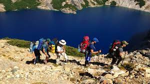Cavernas del Viejo Volcán
Un viaje a la prehistoria descubriendo el Volcán petríficado de Cerro Leones. Visitarás 3 cavernas donde podrás encontrar desde pinturas rupestres hasta un manantial que forma un lago subterráneo.
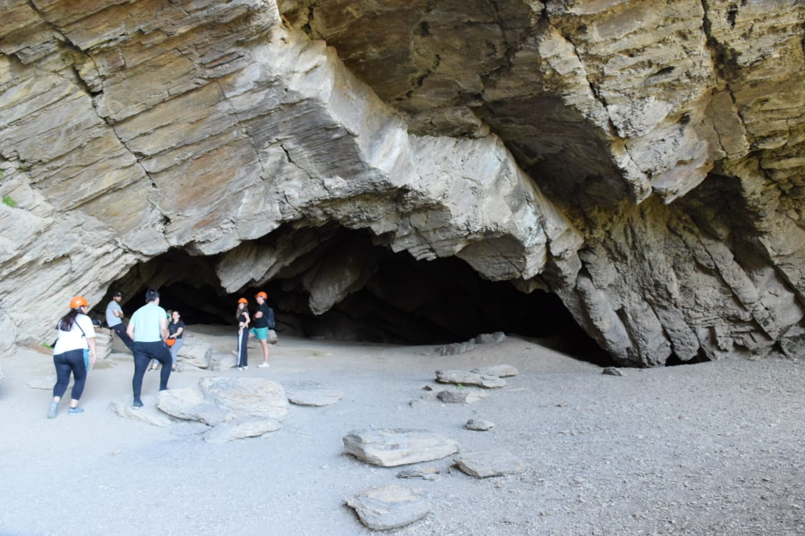Turismo y Aventura
Las aguas del Nahuel Huapi, conforman un epicentro ideal para actividades como el Kitesurf, Windsurf,o simplemente disfrutar de sus playas.
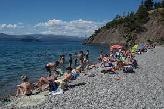Pesca Deportiva
Su ubicación privilegiada en el nacimiento del Río Limay, transforma a Dina Huapi como la ciudad elegida por los amantes de la pesca
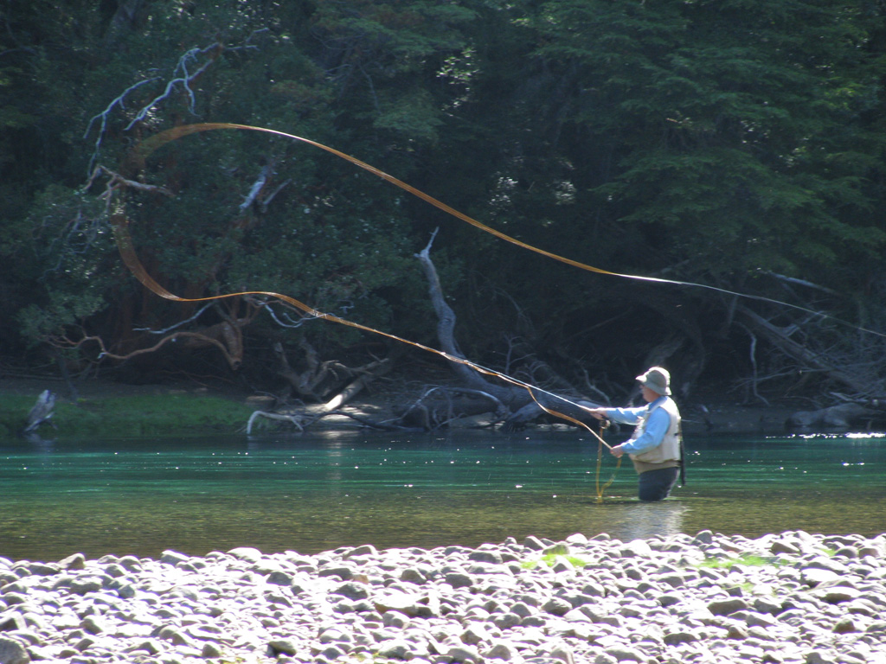DONDE ALOJARSE EN DINA HUAPI
Hotel Raíces Patagónicas
Hotel informal con cabañas y apartamentos sencillos, piscina cubierta climatizada, jardín y área de
barbacoa.
Dirección: Quintral 220, R8402 Dina Huapi, Río Negro
Cabañas Clarita
Las cabañas incluyen TV, microondas,Wifi,servicio de limpieza y estacionamiento gratis.
Direccion:
Los
Notros 861, Dina Huapi, Río Negro
Posada del Camino
Alojamiento con habitaciones y apartamentos amueblados, piscina al aire libre y utensilios para barbacoa.
Dirección: El Cóndor 290, R8402 Dina Huapi, Río Negro
El Bolsón
Al sudoeste de la provincia de Río Negro y a 18 Km. del Parque Nacional Lago Puelo en la Provincia de Chubut, se encuentra el Bolsón, una región que centra su actividad en el cultivo orgánico de la tierra, las artesanías, la producción de dulces y cerveza y el turismo.
Favorecido por un microclima apacible, este pueblo de montaña está preparado para recibir a todo tipo de visitantes. Naturaleza, aventura, historia, mitos, cultura y tranquilidad son algunos ingredientes que garantizan unas gratas vacaciones.
QUE HACER EN EL BOLSÓN
Turismo Activo
Rafting en los ríos Azul, Puelo, y Manso, Parapente desde la plataforma del Cerro Piltriquitron, acompañado de un instructor, Travesía en 4x4 atravesando caminos de difícil circulación y Canopy en cercanías de la Catarata de Mallín Ahogado.
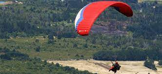Cerro Piltriquitrón y el Bosque Tallado
De las intensas llamas que alguna vez se desataron sobre un bosque de Lengas, éstas resurgen en la forma de esculturas moldeadas por artistas locales y de todo el mundo.
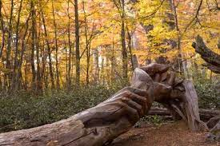Feria Regional Artesanal de El Bolsón
Participa un gran número de expositores, entre los cuales se encuentran artesanos, artistas y productores artesanales de toda la comarca. Se desarrolla los Martes, Jueves y Sábados de 10 a 16 hs, los Domingos mismo horario pero con menos artesanos.
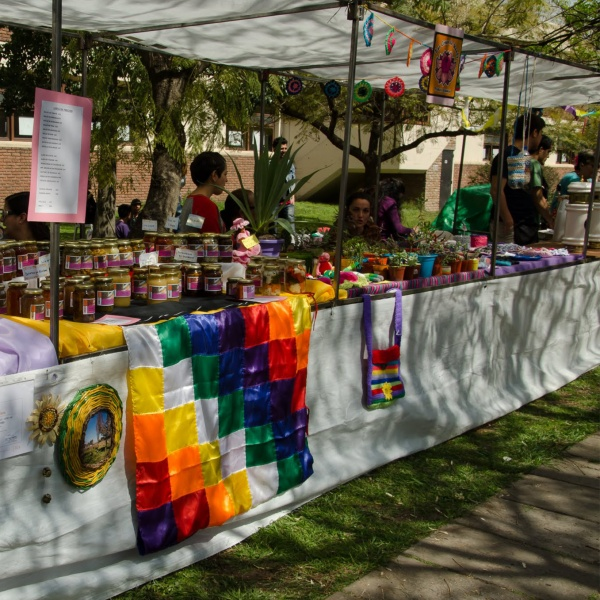Cerveza Artesanal
Las visitas a cervecerías son parte de la experiencia total del viaje y, cada vez más, el motivo principal que mueve a los turistas a visitarnos. Fiesta Nacional del Lúpulo que atrae a miles de visitantes cada año desde 1964.
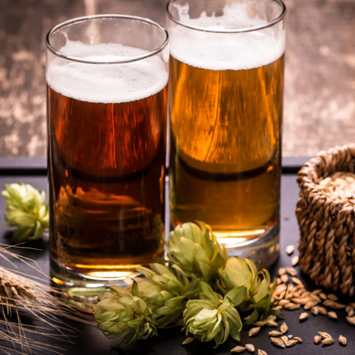DONDE ALOJARSE EN EL BOLSÓN
Cabañas Andina
Cabañas Andina se encuentran en El Bolsón, a 20 km del lago Puelo y a 28 km del cerro Perito Moreno - El
Bolsón, y
ofrecen alojamiento con WiFi gratuita y jardín con terraza y vistas a la ciudad.
Dirección: El Bolsón,
8430 El Bolsón, Río Negro
Cabañas Sublime Bolsón
Cabañas Sublime Bolsón ofrece alojamiento en El Bolsón, a 6 minutos a pie de la plaza Pagano. Hay WiFi
gratuita en todas
las instalaciones.
Direccion:
Saavedra 3089, El Bolsón, Río Negro
La Casa de la Abuela
La Casa De La Abuela Departamentos está situada en El Bolsón, a solo 150 metros de la plaza Pagano.
Ofrece WiFi gratuita
en todas las instalaciones.
Dirección: Dorrego 555, El Bolsón, Río Negro
El Manso
Se encuentra en el Valle del Manso, donde lagos y ríos de aguas cristalinas bañan el bosque andino. Paraíso escondido a un costado de la legendaria Ruta 40 entre Bariloche y el Bolsón, donde reina el silencio y la cordillera de Los Andes se presenta como un telón de fondo omnipresente y encantador.
El río Manso, de aguas correntosas, frías y cristalinas es ideal para practicar para practicar canotaje o rafting.
QUE HACER EN EL MANSO
Rafting Aventura
Rafting con diferentes grados de dificultad, experimentando emoción y vértigo en un marco natural sorprendente.
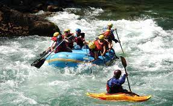Valle del Río Manso
Acampar, practicar deportes acuáticos y disfrutar del entorno son algunas actividades que podés hacer en este rincón enclavado en la Cordillera de los Andes.
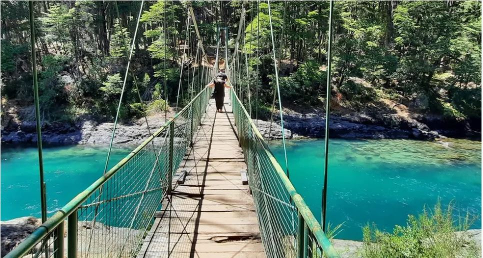Piletones del Río Manso
En medio de uno de los frondosos bosques patagónicos, se encuentra un paraíso oculto con hermosas piletas naturales ideales para disfrutar en esta temporada de verano. Conocé el Río Manso y sus bellezas increíbles.
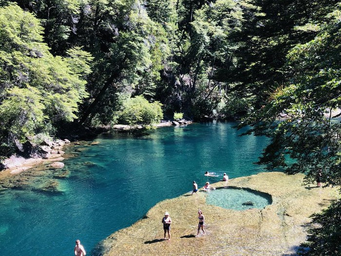DONDE ALOJARSE EN EL MANSO
Cabañas Campestre
Las Cabañas ofrecen alojamiento con WiFi y estacionaminto gratuitos, servicio de limpieza y jardín con
terraza y vistas a la ciudad.
Dirección: Ruta N°83 km 28, El Manso, Río Negro
Camping El Puerto
A orillas del Río Manso, con la mejor cerveza de la
zona y acompañado de una hermosa vista. Podés acampar o utilizar los dormis con duchas, fogones con
instalaciones eléctricas. El bar abre por las tardes.
Direccion: Ruta 83 km 11,Valle del Manso, Río
Negro
- info_at4.0@argentinaturismo4.0.com
- Sarmiento 440 - CABA
- Contactanos